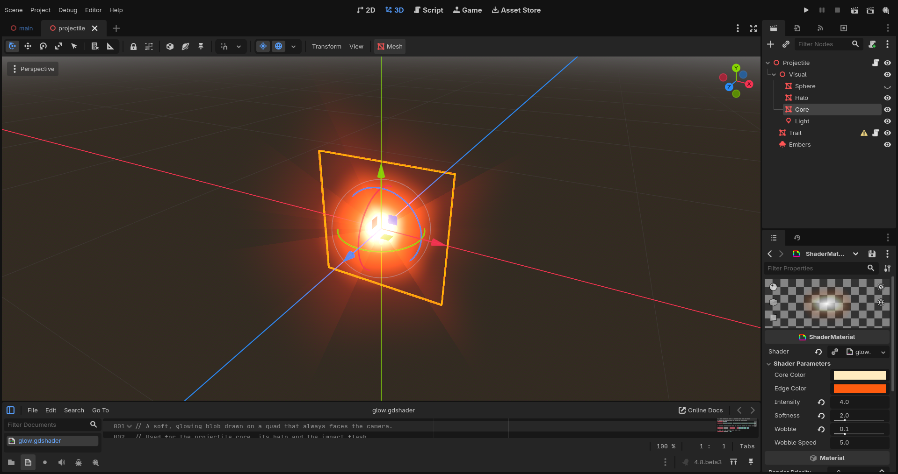
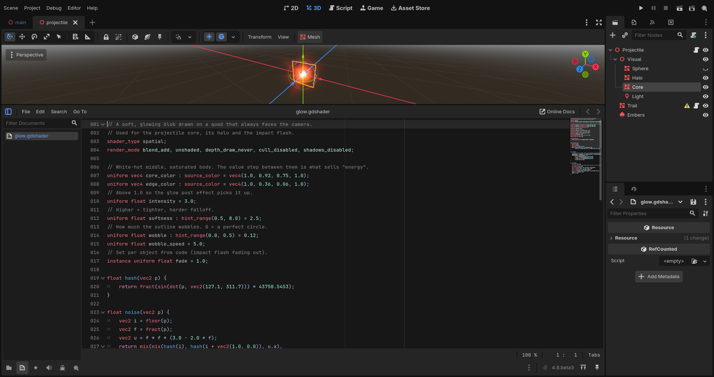
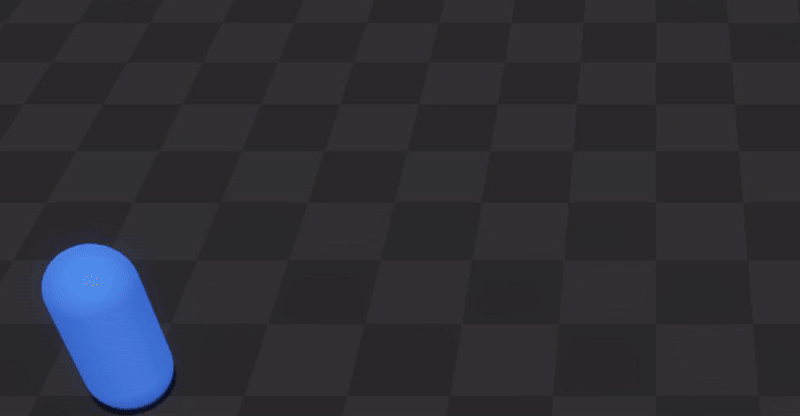
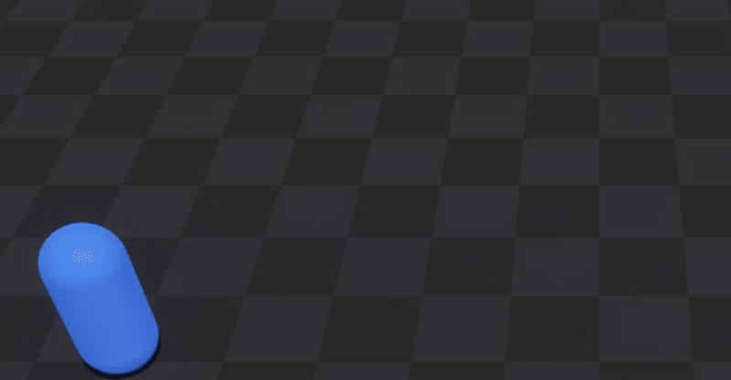

Everything here runs on Godot 4.4 or newer with the Forward+ renderer. The whole project is at the end of the post if you’d rather poke at it than copy code from a web page.
I’ll go in the same order I’d build an effect for a real game: first make it work, then make it read, then make it feel good. Every GIF below is the same scene, with one more piece turned on each time.
A scene you can judge effects in
Before touching the projectile, set up a place to look at it. It’s hard to judge glow on Godot’s default grey sky. MOBA effects are seen from far above, on a dark-ish floor, next to characters, so the test scene should look like that too.
- Camera: high and tilted, like a MOBA. Mine sits at
(0, 8.5, 7.8)looking at the middle of the lane, with a 40° FOV. Always judge the effect from the camera the player will actually use. - Floor: a dark checker. The squares give you a sense of scale and speed, and dark ground is where additive effects read best.
- Two capsules: a blue caster and a red target 10 m apart. The target strafes from side to side so you can see the projectile home in.
- WorldEnvironment: Filmic tonemapping, and glow enabled with
HDR Thresholdat1.0,Intensity0.9,Bloom0.04. This matters more than anything else in the scene, and I’ll get back to why in step 2.
// Dark checker floor for the test scene.
shader_type spatial;
uniform vec3 color_a : source_color = vec3(0.10, 0.10, 0.11);
uniform vec3 color_b : source_color = vec3(0.14, 0.14, 0.15);
varying vec3 world_pos;
void vertex() {
world_pos = (MODEL_MATRIX * vec4(VERTEX, 1.0)).xyz;
}
void fragment() {
vec2 cell = floor(world_pos.xz);
ALBEDO = mix(color_a, color_b, mod(cell.x + cell.y, 2.0));
ROUGHNESS = 0.9;
}main.gd fires a projectile every 1.5 seconds. It also has a step property (1 to 6) that switches on the parts of the effect one at a time, so each GIF in this post is the same scene at a different step. You can change it on the Main node in the inspector, or run the scene with ++ step=3 on the command line.
Step 1: make it move
Start with gameplay. The projectile is a Node3D that homes in on a target node, aiming at chest height. Every physics frame it moves speed * delta toward the target, and once it gets close enough it finishes.
class_name Projectile
extends Node3D
## Flies toward a target node (homing), plays an impact when it gets there, then lets its
## trail and embers fade out before freeing itself.
signal arrived(at: Vector3)
@export var speed := 14.0
## Close enough to count as a hit.
@export var hit_radius := 0.35
## Where on the target to aim (chest height).
@export var aim_offset := Vector3(0, 1.0, 0)
@export var impact_scene: PackedScene
## false = the impact plays its flash only.
@export var full_impact := true
var target: Node3D
var _flying := false
@onready var _visual: Node3D = $Visual
@onready var _trail: Trail = $Trail
@onready var _embers: GPUParticles3D = $Embers
func launch(from: Vector3, to: Node3D) -> void:
global_position = from
target = to
_flying = true
_embers.emitting = _embers.visible
func _physics_process(delta: float) -> void:
if not _flying:
return
if not is_instance_valid(target):
_finish(global_position)
return
var aim := target.global_position + aim_offset
var to_target := aim - global_position
var step := speed * delta
if to_target.length() <= maxf(step, hit_radius):
_finish(aim)
return
global_position += to_target.normalized() * step
func _finish(at: Vector3) -> void:
_flying = false
# Hide the head right away, but let the trail and the embers die out on their own.
_visual.visible = false
_trail.emitting = false
_embers.emitting = false
if impact_scene:
var fx: Node3D = impact_scene.instantiate()
fx.set(&"full", full_impact)
get_parent().add_child(fx)
fx.global_position = at
arrived.emit(at)
await get_tree().create_timer(0.8).timeout
queue_free()Two details that save headaches later:
- The hit check uses
maxf(step, hit_radius). A fast projectile can move further than the hit radius in one frame and jump right past the target, flipping back and forth forever. Comparing against the step size fixes it. - When it hits, the projectile doesn’t free itself right away. It hides the head (
Visual), stops the trail and the particles from spawning more, and waits 0.8 s. The trail and embers we add later need that time to fade out. If youqueue_free()on hit, everything behind the projectile vanishes in one frame, and it looks like a bug.
Everything that makes up the “head” lives under one Visual node, so hiding it on impact is one line. The sphere is just a placeholder. It’s useful for testing, but it gets lit by the sun like any rock would, so it doesn’t look like it makes its own light.
Step 2: a glow shader
This is the biggest jump in the whole post, and it’s two quads with one shader on them. The shader draws a soft round blob on a quad that always faces the camera.
// A soft, glowing blob drawn on a quad that always faces the camera.
// Used for the projectile core, its halo and the impact flash.
shader_type spatial;
render_mode blend_add, unshaded, depth_draw_never, cull_disabled, shadows_disabled;
// White-hot middle, saturated body. The value step between them is what sells "energy".
uniform vec4 core_color : source_color = vec4(1.0, 0.92, 0.75, 1.0);
uniform vec4 edge_color : source_color = vec4(1.0, 0.36, 0.06, 1.0);
// Above 1.0 so the glow post effect picks it up.
uniform float intensity = 3.0;
// Higher = tighter, harder falloff.
uniform float softness : hint_range(0.5, 8.0) = 2.5;
// How much the outline wobbles. 0 = a perfect circle.
uniform float wobble : hint_range(0.0, 0.5) = 0.12;
uniform float wobble_speed = 5.0;
// Set per object from code (impact flash fading out).
instance uniform float fade = 1.0;
float hash(vec2 p) {
return fract(sin(dot(p, vec2(127.1, 311.7))) * 43758.5453);
}
float noise(vec2 p) {
vec2 i = floor(p);
vec2 f = fract(p);
vec2 u = f * f * (3.0 - 2.0 * f);
return mix(mix(hash(i), hash(i + vec2(1.0, 0.0)), u.x),
mix(hash(i + vec2(0.0, 1.0)), hash(i + vec2(1.0, 1.0)), u.x), u.y);
}
void vertex() {
// Billboard: swap the model's rotation for the camera's, keep position and scale.
MODELVIEW_MATRIX = VIEW_MATRIX * mat4(INV_VIEW_MATRIX[0], INV_VIEW_MATRIX[1], INV_VIEW_MATRIX[2], MODEL_MATRIX[3]);
MODELVIEW_MATRIX = MODELVIEW_MATRIX * mat4(
vec4(length(MODEL_MATRIX[0].xyz), 0.0, 0.0, 0.0),
vec4(0.0, length(MODEL_MATRIX[1].xyz), 0.0, 0.0),
vec4(0.0, 0.0, length(MODEL_MATRIX[2].xyz), 0.0),
vec4(0.0, 0.0, 0.0, 1.0));
}
void fragment() {
vec2 p = UV * 2.0 - 1.0;
// Wobble the radius with noise sampled around the circle, so the edge boils.
float angle = atan(p.y, p.x);
float n = noise(vec2(angle * 2.0 + 10.0, TIME * wobble_speed));
float r = length(p) * (1.0 + (n - 0.5) * wobble * 2.0);
float m = pow(clamp(1.0 - r, 0.0, 1.0), softness);
vec3 col = mix(edge_color.rgb, core_color.rgb, smoothstep(0.35, 0.9, m));
ALBEDO = col * intensity * fade;
ALPHA = m * fade;
}Why it looks hot
Three things in there do most of the work:
blend_addandunshaded. Additive blending adds the colour on top of what’s behind it, so the glow can only make things brighter, like real light.unshadedmeans the sun and shadows don’t touch it.intensityabove 1.0. The core is drawn at 4× its colour. With the WorldEnvironment glow threshold at 1.0, only pixels brighter than 1.0 bloom. So the hot middle blooms and the floor, the capsules and the UI don’t. This is the main reason to keep threshold at 1.0 instead of 0: you choose what glows by pushing it over 1.- Two colours, mixed by brightness. The middle is almost white (
core_color), the outside is a saturated orange (edge_color). Fire, magic and lasers all look like this: the hottest part is close to white, and the colour lives around it. A blob that’s orange all the way through looks like a sticker.
softness is the exponent on the falloff. Low values give a wide, foggy glow, high values give a tight dot. The halo uses 3.2 on a 1.5 m quad with low intensity, and the core uses 2.0 on a 0.6 m quad at intensity 4. Same shader, two very different jobs.
The wobble part moves the radius a little with noise sampled around the circle, so the edge boils instead of being a perfect disc. Keep it subtle. At 0.1 you barely see it, but the orb feels alive.

The billboard trick
The vertex() function turns any quad into a billboard. MODELVIEW_MATRIX normally carries the node’s own rotation. Here I build a new one from the camera’s rotation (INV_VIEW_MATRIX) and the node’s position (MODEL_MATRIX[3]), then put the node’s scale back. The quad always faces the camera, but you can still scale it from code, which the impact flash needs later.

The halo and the core are both transparent, so I give the core sorting_offset = 0.1 to make sure it always draws after the halo. With additive blending the order doesn’t change the colour much, but it stops flickering when they overlap exactly.
I also added an OmniLight3D to the Visual node (orange, range 3.5 m). You’ll see it light up the floor in the last step. A real light on the ground under the projectile does a lot to make it feel like it’s actually there.
Step 3: the trail

The trail tells the player where the projectile came from and how fast it’s going. That’s gameplay information, not just decoration. Godot doesn’t have a trail node for 3D, so I build a ribbon mesh every frame with ImmediateMesh.
class_name Trail
extends MeshInstance3D
## Camera-facing ribbon that follows its parent. Each point remembers when it was made,
## and points older than `lifetime` drop off the tail.
@export var lifetime := 0.35
@export var width := 0.55
## Don't add a point until the head has moved this far.
@export var min_distance := 0.08
var emitting := true
var _points: PackedVector3Array = []
var _ages: PackedFloat32Array = []
var _mesh := ImmediateMesh.new()
func _ready() -> void:
mesh = _mesh
# The ribbon lives in world space, so it doesn't drag along with the projectile.
top_level = true
global_transform = Transform3D.IDENTITY
func _process(delta: float) -> void:
for i in _ages.size():
_ages[i] += delta
# Old points fall off the tail.
while _ages.size() > 0 and _ages[_ages.size() - 1] > lifetime:
_points.remove_at(_points.size() - 1)
_ages.remove_at(_ages.size() - 1)
if emitting:
var head := (get_parent() as Node3D).global_position
if _points.is_empty() or _points[0].distance_to(head) > min_distance:
_points.insert(0, head)
_ages.insert(0, 0.0)
else:
# Keep the newest point glued to the head so the ribbon never lags behind it.
_points[0] = head
_rebuild()
func _rebuild() -> void:
_mesh.clear_surfaces()
var cam := get_viewport().get_camera_3d()
if _points.size() < 2 or cam == null:
return
_mesh.surface_begin(Mesh.PRIMITIVE_TRIANGLE_STRIP)
for i in _points.size():
var p := _points[i]
# Direction along the ribbon, from the neighbours on each side (smooth through curves).
var dir := _points[maxi(i - 1, 0)] - _points[mini(i + 1, _points.size() - 1)]
var to_cam := cam.global_position - p
# The sideways vector faces the camera, so the strip is never seen edge-on.
var side := dir.cross(to_cam).normalized()
var age := clampf(_ages[i] / lifetime, 0.0, 1.0)
var w := width * (1.0 - age * age)
_mesh.surface_set_uv(Vector2(age, 0.0))
_mesh.surface_add_vertex(p + side * w * 0.5)
_mesh.surface_set_uv(Vector2(age, 1.0))
_mesh.surface_add_vertex(p - side * w * 0.5)
_mesh.surface_end()The idea is simple: keep a list of recent positions of the head, each with an age. New points go in front, points older than lifetime drop off the back. Each frame, turn that list into a strip of triangles.
top_level = true. The trail is a child of the projectile, but its points are in world space. Without this the whole ribbon would move with the projectile, like a stick glued to it.- Facing the camera. For each point, the sideways direction is the cross product of the direction along the trail and the direction to the camera. That keeps the flat strip turned toward the camera, so you never see it edge-on as a thin line.
- Tapering. The width goes down with
1 - age², so it stays thick for a while and then thins out quickly at the end. - UVs that mean something.
UV.xis the age (0 at the head, 1 at the tail) andUV.ygoes across. The shader uses that instead of a texture.
Ages advance by delta, not by the wall clock. That way the trail follows the game’s time scale, so slow motion and pausing work for free.
// The ribbon behind the projectile. UV.x = age (0 at the head, 1 at the tail), UV.y = across.
shader_type spatial;
render_mode blend_add, unshaded, depth_draw_never, cull_disabled, shadows_disabled;
uniform vec4 head_color : source_color = vec4(1.0, 0.85, 0.5, 1.0);
uniform vec4 tail_color : source_color = vec4(1.0, 0.22, 0.02, 1.0);
uniform float intensity = 2.2;
// Noise sliding along the ribbon makes it look like it flows instead of being a flat strip.
uniform float scroll_speed = 4.0;
uniform float breakup : hint_range(0.0, 1.0) = 0.55;
float hash(vec2 p) {
return fract(sin(dot(p, vec2(127.1, 311.7))) * 43758.5453);
}
float noise(vec2 p) {
vec2 i = floor(p);
vec2 f = fract(p);
vec2 u = f * f * (3.0 - 2.0 * f);
return mix(mix(hash(i), hash(i + vec2(1.0, 0.0)), u.x),
mix(hash(i + vec2(0.0, 1.0)), hash(i + vec2(1.0, 1.0)), u.x), u.y);
}
void fragment() {
float age = UV.x;
float across = abs(UV.y * 2.0 - 1.0);
// Soft edges, brightest along the middle.
float body = 1.0 - smoothstep(0.15, 1.0, across);
float n = noise(vec2(UV.x * 7.0 - TIME * scroll_speed, UV.y * 3.0));
// Fade toward the tail, and let the noise eat the tail first.
float m = body * (1.0 - age);
m *= mix(1.0, smoothstep(age * 0.9, age * 0.9 + 0.35, n), breakup);
vec3 col = mix(head_color.rgb, tail_color.rgb, smoothstep(0.0, 0.6, age));
ALBEDO = col * intensity;
ALPHA = clamp(m, 0.0, 1.0);
}The trail shader does three things: soft edges across the ribbon, a colour shift from a yellow head to a deep orange tail, and noise that scrolls backwards along it. The trick is in the smoothstep with age: as a point gets older, the threshold goes up, so the noise eats the tail first. The ribbon breaks into pieces at the end instead of fading like a gradient, and that looks much more like fire.
Step 4: embers
Embers add secondary motion: things that react to the main motion instead of just following it. They are a GPUParticles3D with a tiny quad.
| Setting | Value | Why |
|---|---|---|
local_coords | off | The most important one. Particles stay where they spawned instead of following the projectile, so they get left behind. |
amount / lifetime | 32 / 0.6 s | Short life, just enough to see a scattered line behind the head. |
| Emission | Sphere, radius 0.12 | Spawn inside the orb, not at a single point. |
| Velocity | 0.3 to 1.1, spread 180° | Slow, in every direction. They drift, they don’t shoot out. |
| Gravity | (0, 1.5, 0) | Upward. Hot embers rise. |
| Damping | 1 to 2 | Kills the initial push so they hang in the air. |
| Scale curve | 1 → 0 | They shrink away instead of popping out. |
| Color ramp | HDR white → orange → dark red, alpha to 0 | Same hot-to-cool idea as the core. |
For the colour ramp, tick Use HDR on the GradientTexture1D and use values above 1 for the first colours (I start at (3.0, 2.6, 2.0)). Without that the ramp clamps at 1.0, the embers never cross the glow threshold, and they look flat next to the glowing core.
The particle material is a StandardMaterial3D: unshaded, additive blend, Vertex Color > Use as Albedo on (that’s how the colour ramp reaches the quad), and a radial GradientTexture2D from white to transparent as the albedo texture. That gives you a soft round dot without painting anything.
Step 5: the impact

Up to now the projectile just disappeared on contact, and the hit was the least satisfying part. The impact is a separate scene that the projectile spawns at the hit position. First version: a single flash using the same glow shader with a high intensity.
The flash is biggest on the first frame and shrinks while it fades. It reaches full size immediately and is almost gone in 0.12 s, about 7 frames at 60 fps. An impact that grows in looks soft and late. An impact that’s already at full size when it appears looks like it hit hard.
Fading uses the fade instance uniform from the glow shader. Instance uniforms are set per node with set_instance_shader_parameter(), so every impact can fade on its own without duplicating the material.
Step 6: polish
This is the step where it starts to feel good. None of these pieces is complicated, but together they make the hit feel heavier:
- Sparks. A one-shot burst of 26 particles, all at once (
explosiveness1). They shoot up fast and fall with strong gravity. The quad is thin and tall (0.07 × 0.55) andtransform_alignisZ-Billboard, Y to Velocity, which stretches each spark along the direction it’s moving. That’s the cheap way to get motion-blurred streaks. - A ring on the floor. Even though the projectile hits at chest height, the ring is snapped to the floor. It tells the player where the hit happened on the ground, which is what they read from a top-down camera. It expands quickly, then slows down.
- Light. An
OmniLight3Dthat starts at energy 8 and drops to 0 in the same 0.12 s as the flash. The floor and the target light up for a moment. This is probably the most underrated part of the whole effect. - Cast flash. When the caster fires, I spawn the same impact scene at the hand, at 45% scale and with only the flash. It’s free and it makes the shot feel like it was released, instead of appearing out of nowhere.
- Camera shake. Short and small.
extends Node3D
## Impact: a flash that pops and shrinks, a ring that expands on the floor, a burst of
## sparks and a quick light. Everything is timed from one clock so it reads as one hit.
## false = flash only (the simple version from step 5 of the tutorial).
@export var full := true
@export var lifetime := 0.55
var _t := 0.0
@onready var _flash: GeometryInstance3D = $Flash
@onready var _ring: GeometryInstance3D = $Ring
@onready var _sparks: GPUParticles3D = $Sparks
@onready var _light: OmniLight3D = $Light
func _ready() -> void:
_ring.visible = full
_sparks.visible = full
_light.visible = full
# The ring lies on the floor even when the hit lands at chest height.
_ring.global_position.y = 0.03
if full:
_sparks.restart()
_update()
func _process(delta: float) -> void:
_t += delta
_update()
if _t > lifetime + 0.5:
queue_free()
func _update() -> void:
var k := clampf(_t / lifetime, 0.0, 1.0)
# Flash: biggest on the first frame, then shrinks and fades in about 0.12 s.
var f := clampf(_t / 0.12, 0.0, 1.0)
_flash.scale = Vector3.ONE * lerpf(1.8, 0.6, f)
_flash.set_instance_shader_parameter(&"fade", 1.0 - f)
# Ring: fast at first, then slows down (ease-out), fading as it grows.
var e := 1.0 - pow(1.0 - k, 3.0)
_ring.scale = Vector3.ONE * lerpf(0.4, 3.2, e)
_ring.set_instance_shader_parameter(&"fade", 1.0 - k)
_light.light_energy = 8.0 * (1.0 - f)Everything in the impact is driven by one clock, _t, in _update(). That’s on purpose. If the flash, the ring and the light each run on their own tween, they slowly drift apart while you tweak them, and the hit stops reading as one event. With one clock you can see the whole timing on one screen:
The ring shader has a sharp outer edge and a soft inner one, so it reads as a wave pushing outward. Its scale uses a cubic ease-out (1 - (1 - k)³), which means fast at first and slow at the end, like a real shockwave losing energy.
// A thin ring for the impact shockwave. Lies flat on a PlaneMesh.
shader_type spatial;
render_mode blend_add, unshaded, depth_draw_never, cull_disabled, shadows_disabled;
uniform vec4 color : source_color = vec4(1.0, 0.55, 0.15, 1.0);
uniform float intensity = 2.5;
uniform float radius : hint_range(0.1, 1.0) = 0.8;
uniform float thickness : hint_range(0.01, 0.3) = 0.07;
instance uniform float fade = 1.0;
void fragment() {
float r = length(UV * 2.0 - 1.0);
// Sharp outer edge, softer inner one: reads as a wave pushing outward.
float d = r - radius;
float w = d > 0.0 ? thickness * 0.5 : thickness * 1.6;
float ring = exp(-(d * d) / (w * w));
ALBEDO = color.rgb * intensity * fade;
ALPHA = ring * fade;
}The cast flash and the camera shake live in main.gd, because they belong to the game more than to the projectile. The shake is a random offset that decays fast. Squaring it makes it fall off even faster, so you get one strong kick and not a wobble:
# Camera shake: random offset that dies out quickly.
_shake = maxf(_shake - delta * 3.0, 0.0)
var s := _shake * _shake
_camera.transform = _cam_home.translated_local(Vector3(randf_range(-1, 1), randf_range(-1, 1), 0.0) * s * 0.25)if step >= 6:
# A small flash at the hand sells the release.
var cast: Node3D = IMPACT.instantiate()
cast.full = false
cast.scale = Vector3.ONE * 0.45
add_child(cast)
cast.global_position = muzzleKeep the shake tiny for something as small as a basic attack. If every auto-attack shakes the screen hard, players will turn the option off, and then your big ultimate loses its shake too.
What actually makes it look good
The code is the easy part. These are the things I keep coming back to when an effect looks “off” and I can’t tell why:
- Value before colour. Look at your effect in greyscale (or squint). There should be a clear brightest point, the core, and everything else should step down from it. If the trail is as bright as the core, the eye doesn’t know where to look.
- White-hot middle, saturated edges. Colour lives in the mid-tones and the edges. The centre goes toward white. This works for fire, ice, poison, holy, all of them. Only the edge colour changes.
- HDR and glow do the heavy lifting. Push the parts that should glow over 1.0 and keep the glow threshold at 1.0. Then you decide what blooms, and the rest of the game stays clean.
- Fast in, slow out. Flashes start at full size. Rings and shockwaves start fast and slow down. Fading is usually slower than appearing. Things that ease in look weak.
- Secondary motion. The embers and the wobble aren’t the effect, but without them the orb looks like an image sliding across the screen.
- Sell it on the world. The real light on the floor, the ring on the ground and the shake are what make the projectile feel like it exists in the scene. They cost almost nothing.
- Readability first. In a MOBA, the player needs to know what’s coming, where it’s going and where it landed, in the middle of a teamfight. Trail = direction. Ring on the floor = where. Flash = when. If a detail doesn’t help with one of those, keep it subtle.
- Judge it in game. At gameplay speed, from the gameplay camera, next to other things. Effects that look great paused in the editor often turn into mush at 60 fps from 15 m away.
Where to take it next
- Other elements. Change
core_color,edge_color, the trail colours and the colour ramps, and you have frost, poison or arcane versions. Keep the white-hot core, and keep the value steps the same. - Textures. Swap the procedural noise for a painted or generated mask to get more shape and detail. Use the same UV setup: age along the trail, distance from the centre on the glow.
- Pooling. Spawning a scene per shot is fine for a test. For a real game with many units firing, keep a few projectiles and impacts around and reuse them.
- Variation. Randomize the impact rotation, spark count and flash size a little on every hit. Even ±10% is enough to stop repeated hits from looking copy-pasted.
The project
Everything in this post is in one small Godot project (4.4+): the test scene, the projectile, the impact, and the four shaders. Open it, run main.tscn, and change step on the Main node to see each stage. Download the project.
If you make something with it, I’d love to see it. Send it on Discord or tag me anywhere.